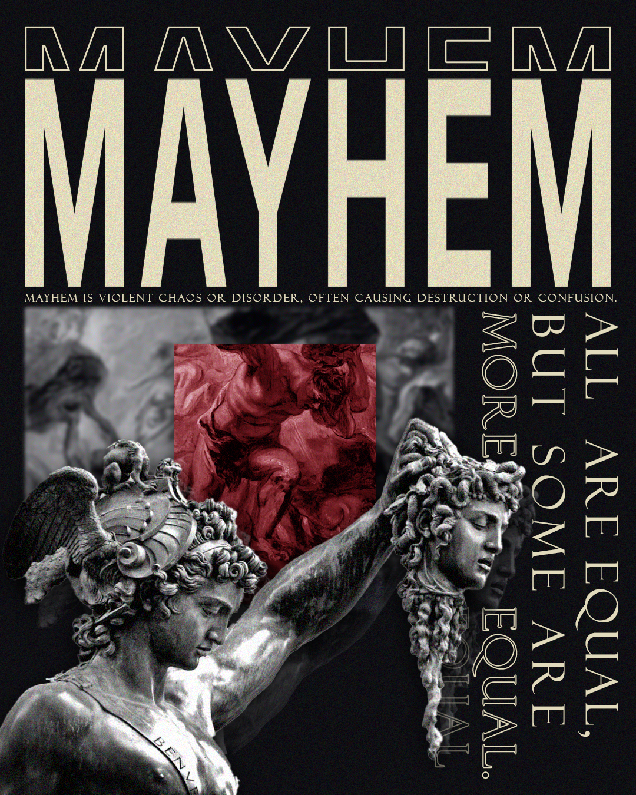
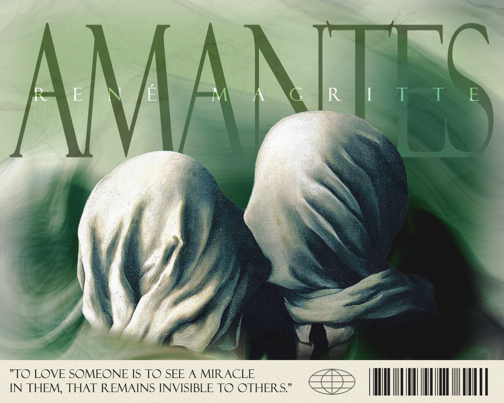
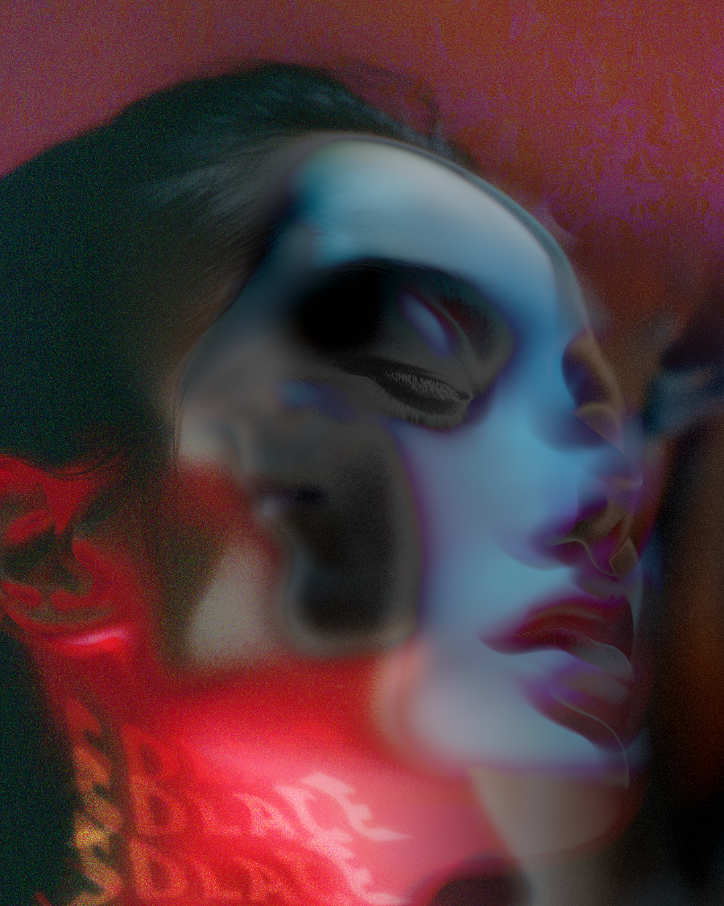
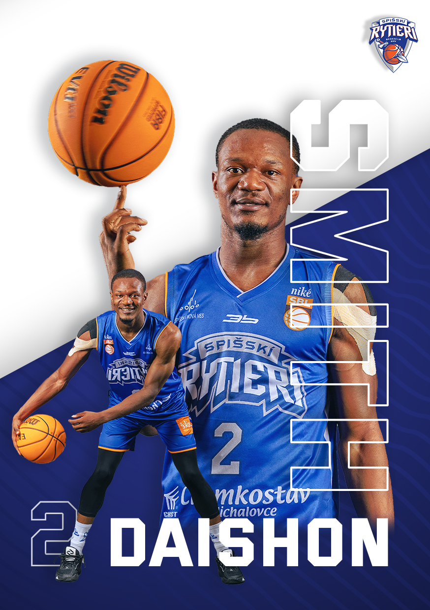
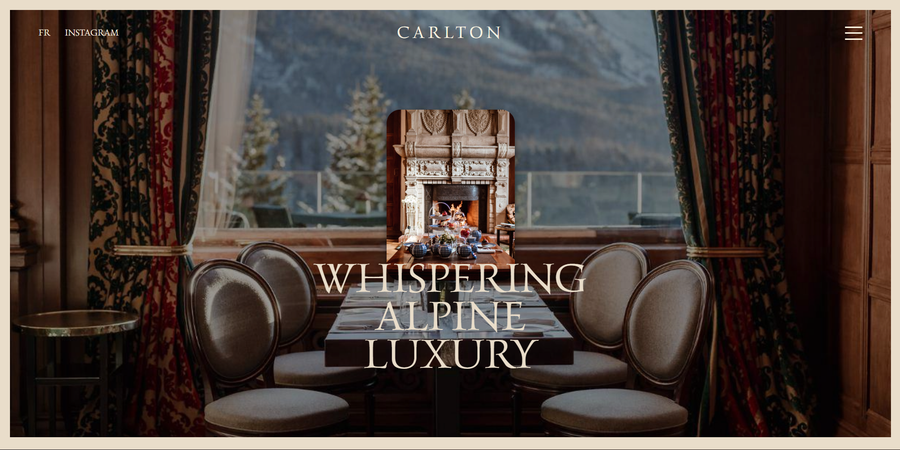
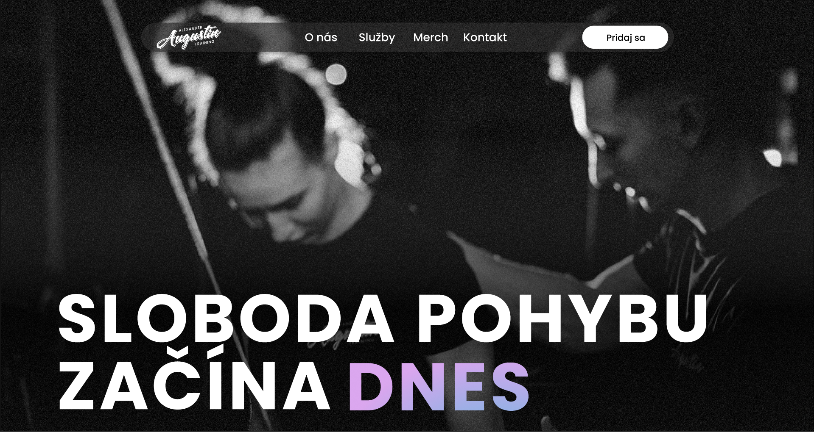
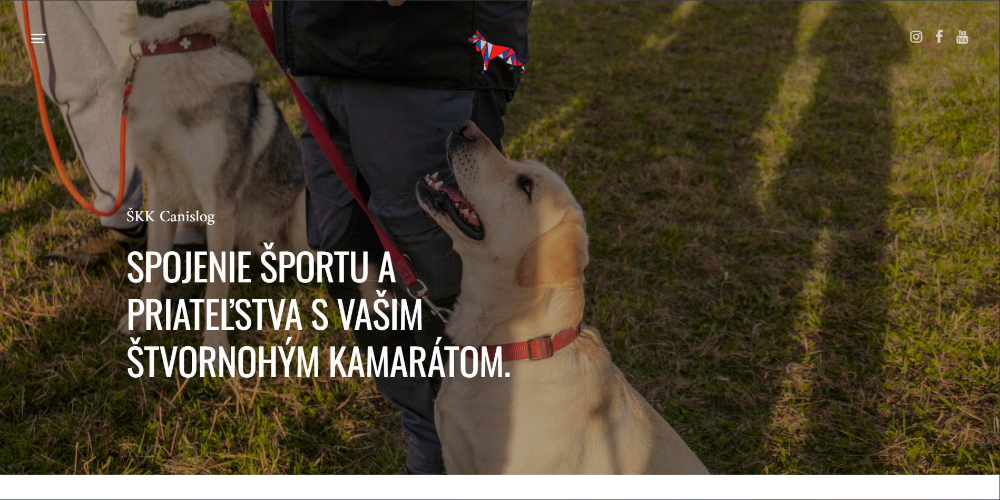

2A, Creative post-processing

2A, Creative post-processing

Meyhem, Freeart

Tatry, Freeart

Amartes, Freeart

Solace, Freeart

Spišskí rytieri, Graphic design

Carlton, Design concept

2A, Web design

SKK, web design & development